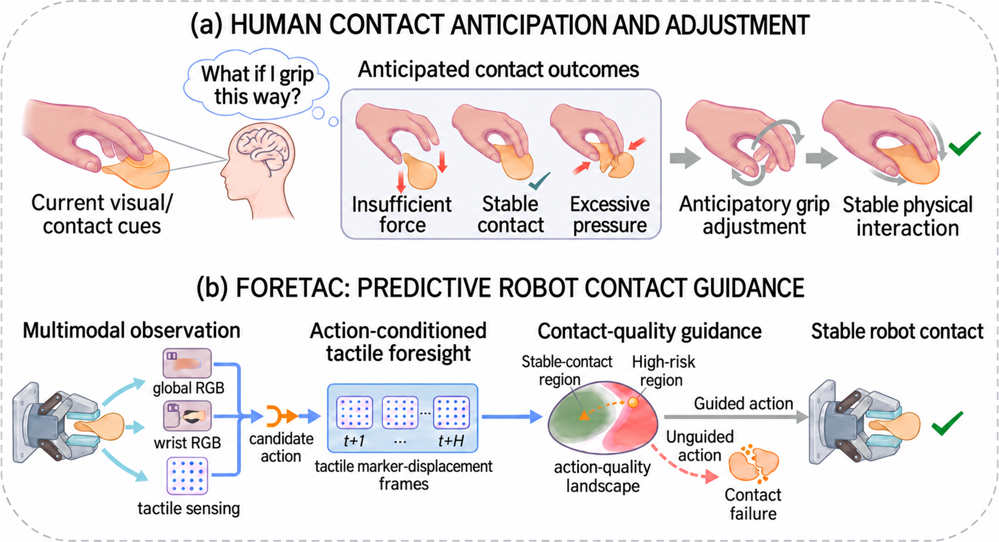
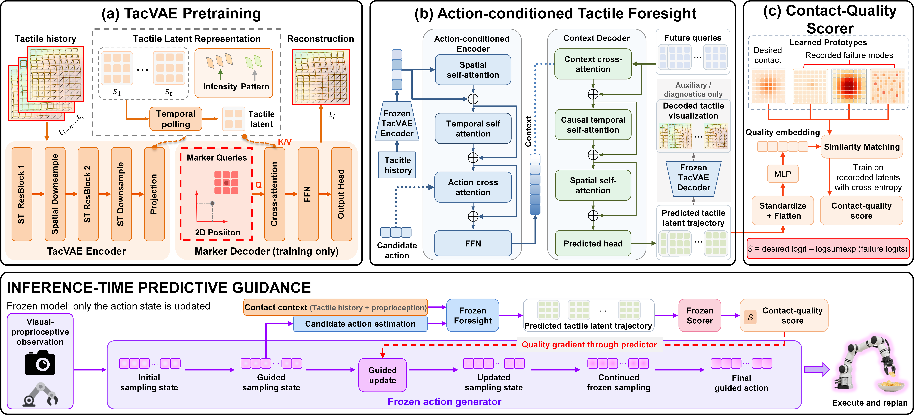
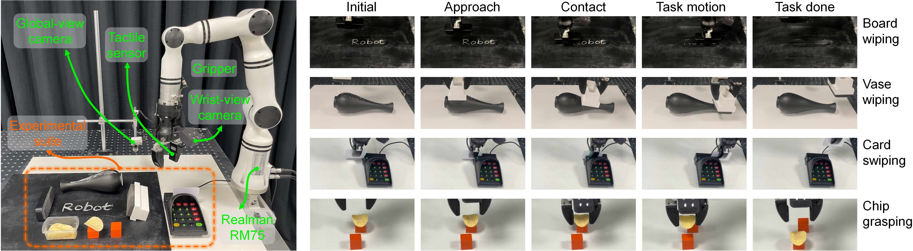
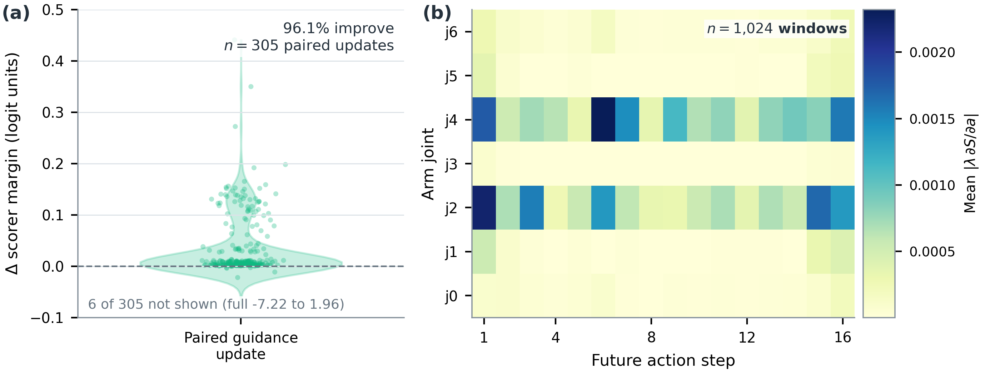

Represent
TacVAE encodes an eight-frame marker-displacement history into compact tactile latent maps.
Predictive Contact Guidance for Generative Robot Policies
Steering Robot Actions with Predicted Contact Consequences
Anonymous Institution
ForeTac turns action-conditioned tactile foresight into a contact-quality signal for generative action formation.
Overview film. The film introduces the four-task benchmark, action-conditioned tactile foresight, predictive guidance diagnostics, and the SR/CSR results reported in the paper.

Visually similar actions can produce contact loss, jamming, slippage, or irreversible damage, while tactile feedback may arrive after a critical transition. Contact-rich manipulation therefore requires generative policies to anticipate and evaluate whether candidate actions will produce desirable contact outcomes, then adjust action generation before execution. We present ForeTac, a predictive contact-guidance framework organized as a represent–predict–evaluate–guide loop. ForeTac encodes the current tactile state, predicts the tactile consequences of a candidate action sequence, and evaluates the predicted trajectory using a contact-quality objective learned from successful and failed physical interactions. Its gradient propagates through the tactile predictor to guide action generation with all model parameters frozen. We evaluate ForeTac on four real-robot tasks—planar and curved-surface wiping, card swiping, and fragile-object grasping—with diffusion and flow-matching policies. Across these tasks, ForeTac raises average task success rate from 36.3% to 71.3% and average contact success rate (CSR) from 20.0% to 66.3% compared with vision-only Diffusion Policy. Component analyses support the tactile representation and action-conditioned foresight, and show that predicted touch preserves contact-quality ordering.
TacVAE encodes an eight-frame marker-displacement history into compact tactile latent maps.
Foresight predicts a temporally aligned 16-step tactile latent trajectory from the current context and candidate action.
A task-specific objective learned from desired contact and recorded failure modes scores the predicted future.
The quality gradient propagates through Foresight into the evolving generative sampling state; parameters stay fixed.
The scorer is part of predictive contact guidance. It receives predicted tactile latents rather than the action directly, so the differentiable path is candidate action → Foresight → contact-quality objective → sampling-state update.
Eight frames of 9×9×2 marker displacement become a 16×3×3 latent map. The decoder is used for reconstruction supervision and diagnostics, not online scoring.
A 3-layer, 8-head Transformer conditions on tactile tokens, proprioception, and the candidate action. The default horizon is 16 future latent states.
Each task has one desired-contact class and three recorded failure modes. A good-versus-bad logit margin supplies the quality signal.
Diffusion Policy and flow-matching π0.5 remain frozen. Only the current generative sampling state is updated before ordinary sampling continues.

All main task results use four real-robot tasks and 20 trials per task. SR measures task-specific geometric completion; CSR additionally requires the predefined physical contact criteria.

Within the evaluated methods and protocols, predictive contact guidance improves both completion and physically acceptable execution over vision-only, current-tactile, and reactive tactile baselines. The flow-matching backbone is evaluated in the second block of Table I.
| Tactile use | Method | Board | Vase | Card | Chip | Average | |||||
|---|---|---|---|---|---|---|---|---|---|---|---|
| SR ↑ | CSR ↑ | SR ↑ | CSR ↑ | SR ↑ | CSR ↑ | SR ↑ | CSR ↑ | SR ↑ | CSR ↑ | ||
| Primary comparison | |||||||||||
| No touch | DP | 50 | 25 | 55 | 35 | 10 | 0 | 30 | 20 | 36.3 | 20.0 |
| RDT | 65 | 55 | 65 | 55 | 20 | 5 | 50 | 45 | 50.0 | 40.0 | |
| Current touch | DP + Tactile Concat | 60 | 50 | 60 | 50 | 35 | 30 | 40 | 35 | 48.8 | 41.3 |
| RDP | 70 | 60 | 65 | 55 | 45 | 35 | 55 | 45 | 58.8 | 48.8 | |
| Predictive touch | DP + ForeTac | 85 | 80 | 70 | 65 | 55 | 50 | 75 | 70 | 71.3 | 66.3 |
| Flow-matching evaluation | |||||||||||
| No touch | π0.5 | 55 | 45 | 60 | 45 | 25 | 20 | 45 | 35 | 46.3 | 36.3 |
| Predictive touch | π0.5 + ForeTac | 80 | 75 | 70 | 65 | 50 | 45 | 70 | 65 | 67.5 | 62.5 |
Table I. SR is the fraction of trials completing the task-specific geometric objective. CSR additionally requires predefined physical contact criteria, so CSR ≤ SR. Each task uses 20 trials; averages weight the four tasks equally. The second block evaluates the flow-matching π0.5 backbone.
Key result. DP + ForeTac improves average SR/CSR over DP by 35.0/46.3 percentage points and over RDP by 12.5/17.5 percentage points. With the flow-matching backbone, ForeTac improves average SR/CSR by 21.3/26.3 points.
The complete pipeline outperforms replacing the current tactile input encoder, using prediction only as an auxiliary loss, or applying predicted-contact quality only after generation through reranking.
| Variant | Board | Vase | Card | Chip | Average |
|---|---|---|---|---|---|
| ForeTac w/ ResNetFrozen ResNet-18 with a learned linear adapter; TacVAE latents remain prediction targets. | 55/55 | 55/40 | 35/10 | 55/50 | 50.0/38.8 |
| Prediction Auxiliary Lossprediction retained only as a training objective | 60/55 | 65/55 | 40/35 | 55/50 | 55.0/48.8 |
| ForeTac w/ Predictive RerankingFixed candidate budget with the same frozen Foresight and scorer; no gradient into sampling. | 65/60 | 65/60 | 45/35 | 60/55 | 58.8/52.5 |
| ForeTac | 85/80 | 70/65 | 55/50 | 75/70 | 71.3/66.3 |
Table II. Cells report SR/CSR (%) over 20 trials per task. The full method is always shown last.
Selected paper-backed analyses examine representation fidelity, action conditioning, prediction horizon, scorer transfer, and the physical guidance signal.
TacVAE is compared with PCA, PointNet-AE, and Conv-AE on the same held-out marker-displacement windows using normalized marker MAE and active-marker cosine similarity. Metrics use training-split channel statistics and are averaged over markers and frames, then windows. Lower MAE and higher cosine similarity are better.
| Encoder | Board | Vase | Card | Chip | ||||
|---|---|---|---|---|---|---|---|---|
| MAE ↓ | Cos. ↑ | MAE ↓ | Cos. ↑ | MAE ↓ | Cos. ↑ | MAE ↓ | Cos. ↑ | |
| PCA | 0.040 | 0.995 | 0.035 | 0.995 | 0.036 | 0.980 | 0.026 | 0.965 |
| PointNet-AE | 0.048 | 0.956 | 0.027 | 0.955 | 0.044 | 0.992 | 0.032 | 0.990 |
| Conv-AE | 0.055 | 0.997 | 0.042 | 0.994 | 0.104 | 0.999 | 0.036 | 0.959 |
| TacVAE | 0.039 | 0.998 | 0.037 | 0.975 | 0.031 | 0.999 | 0.015 | 0.899 |
Table III. TacVAE attains the lowest reconstruction MAE on three of four tasks; cosine similarity ranges from 0.899 to 0.999.
| Configuration | Latent MAE | Marker error |
|---|---|---|
| Aligned candidate action | 0.0589 | 0.2832 px |
| Action-masked control | 0.0941 | 0.5209 px |
Table IV. 20,055 windows from 23 held-out Board episodes. Masking the action increases both errors, supporting action-conditioned prediction.
| L | Latent MAE | Latent cos. | Marker error | SR | CSR |
|---|---|---|---|---|---|
| 1 | 0.167 | 0.9993 | 0.213 px | 60% | 50% |
| 4 | 0.188 | 0.9989 | 0.297 px | 65% | 50% |
| 8 | 0.230 | 0.9965 | 0.317 px | 75% | 65% |
| 12 | 0.261 | 0.9952 | 0.352 px | 80% | 65% |
| 16 | 0.274 | 0.9953 | 0.377 px | 85% | 80% |
Table V. The 16-step predictor and scorer remain fixed. Only the first L predicted states are valid for scoring and guidance; the remaining states are masked. Prediction errors are averaged over the first L steps on matched held-out Board windows. Rollout SR/CSR improves across the evaluated prefixes.
| Task | Correct / pairs | Accuracy |
|---|---|---|
| Board | 1856 / 1980 | 93.7% |
| Vase | 936 / 1012 | 92.5% |
| Card | 1292 / 1408 | 91.8% |
| Chip | 1062 / 1240 | 85.6% |
| Pooled | 5146 / 5640 | 91.2% |
Table VI. Preference-order accuracy on positive–negative pairs from held-out recorded future tactile trajectories. Pairs are formed within the same task and contact phase.
| Task | Recorded | Predicted | Gap | ρ |
|---|---|---|---|---|
| Board | 93.7% | 95.1% | -1.4 | 0.9368 |
| Vase | 92.5% | 91.1% | 1.4 | 0.9728 |
| Card | 91.8% | 94.2% | -2.4 | 0.9321 |
| Chip | 85.6% | 89.5% | -3.9 | 0.9326 |
| Pooled | 91.2% | 92.9% | -1.7 | -- |
Table VII. The same frozen scorer and evaluation pairs are used for recorded and predicted inputs. Recorded and Predicted report preference-order accuracy; Gap is Recorded minus Predicted in percentage points; ρ is rank correlation between the two score sets.

Batch-one replanning latency on an RTX 4090 with a 16-step tactile prediction horizon and 30 DP sampling steps. Values are mean ± standard deviation over 200 timed replans after 50 warm-ups, with CUDA synchronization before and after each timed region.
| Configuration | Added (M) | Total (M) | Latency (ms) |
|---|---|---|---|
| DP | 0 | 338.043 | 132.46 ± 1.39 |
| DP + Foresight | 34.069 | 372.113 | 134.98 ± 1.21 |
| DP + Foresight + Scorer | 34.922 | 372.965 | 135.35 ± 0.86 |
| ForeTac | 34.922 | 372.965 | 261.26 ± 5.16 |
Table VIII. Added parameters are measured relative to DP. The intermediate configurations run each added module once per replan. Full ForeTac repeats prediction, scoring, and backpropagation at ten guided sampling steps. Timing includes observation encoding and all enabled model computations.
The first four rows are the real-robot benchmark tasks: sustained planar contact, changing contact geometry, constrained sliding, and fragile-object interaction. Each row pairs a real execution with a synchronized tactile/marker visualization, and both panels share a playback timeline. Visual Perturbation is an additional qualitative demonstration; Foresight Prediction Visualization is a separate prediction diagnostic. Force curves show processed replay signals in native units.
Four benchmark tasks
Board wiping tests contact establishment and maintenance on a planar surface.
Vase wiping tests contact transfer under changing surface geometry.
Card swiping evaluates constrained sliding with continuous contact and alignment.
Fragile chip grasping exposes the narrow operating range between insufficient force, which causes slip or drop, and excessive force, which may damage the object.
Additional qualitative demonstration
Card swiping under visual disturbance, shown alongside recorded tactile observations.
Prediction diagnostic
An independent t+16 diagnostic compares future ground-truth marker fields with predicted tactile outcomes from the same Board episode.
@article{foretac2026,
title = {ForeTac: Predictive Contact Guidance for Generative Robot Policies},
author = {Anonymous},
journal = {Under Review},
year = {2026}
}